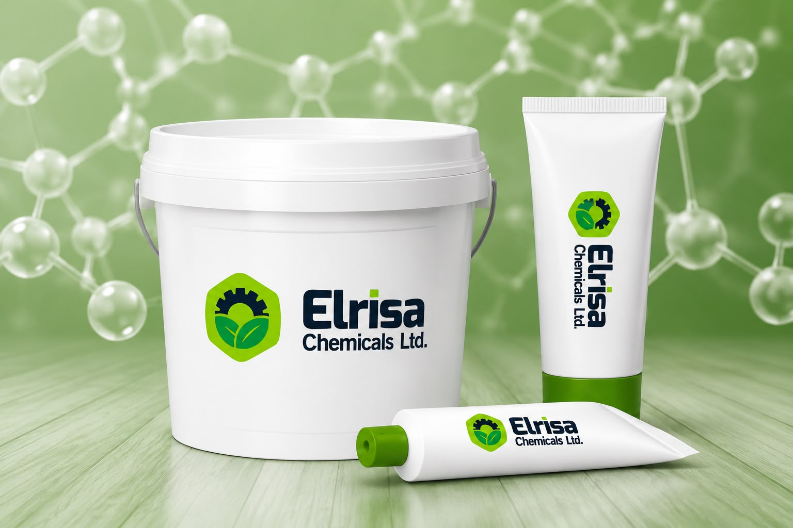
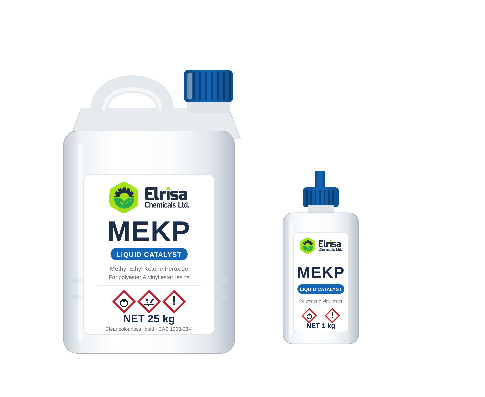

Fibreglass / FRP & Composite Manufacturers
Tanks, laminates and composite structures cured with MEKP catalyst.
MEKPThe curing agents that harden polyester, vinyl ester and acrylic resins — from fibreglass/GRP tanks and boats to body filler, artificial marble and chemical anchoring. Elrisa Chemicals supplies BPO paste and MEKP catalyst to industry across Ghana and West Africa.
Benzoyl peroxide (BPO) paste is a ready-to-use curing agent — the hardener, or "Part B" — that sets unsaturated polyester, vinyl ester and acrylic/MMA resins at room temperature. Mixed into resins, fillers, putties and adhesives (usually alongside an amine accelerator already present in the resin), it triggers the chemical reaction that hardens the material.
Supplied as a 50% benzoyl peroxide paste rather than a dry powder, it is safer and easier to dose, disperses evenly through the resin, and gives consistent, controllable curing — important for anyone mixing hardener by hand on a job site or production floor.


Methyl ethyl ketone peroxide (MEKP) is a liquid catalyst used to cure unsaturated polyester and vinyl ester resins, typically dosed at 1–3% of resin weight. It is the standard initiator for hand lay-up and spray-up fibreglass/GRP work — the process used to build water and chemical storage tanks, GRP pipes, boats, roofing sheet and other composite structures.
Because it is a liquid rather than a paste, MEKP measures and mixes quickly into large resin batches, making it the go-to gel coat catalyst and laminating resin catalyst across the fibreglass industry.
Both are the curing "Part B" mixed into a resin "Part A" — but they are not interchangeable. The application decides which one is correct.
The right choice for fillers, putties, automotive body repair, cast and artificial marble, stone adhesives, chemical anchoring resins, and acrylic/MMA systems.
The standard catalyst for laminating fibreglass/GRP — water and chemical tanks, GRP pipes, boats, roofing sheet, and composite structures.
Neither BPO paste nor MEKP is used to cure PE or PVC plastics — both are curing agents for thermoset resins only. Not sure which grade fits your process? Ask our team.
Consistent curing protects your production line, your product quality, and your margins.
Even dispersion and consistent active-oxygen content mean fewer failed batches, less rework, and a curing process you can plan production around.
Held in stock in Ghana, ready to move — shorter lead times keep your fibreglass, marble or body-filler production line moving.
Consistent organic peroxide chemistry, supplied by Elrisa specifically for Ghana's composite and resin industry.
Three formulations covering premium, standard and liquid-catalyst curing needs. Full technical data below — always confirm against the current Safety Data Sheet (SDS) before use.
A phthalate-free benzoyl peroxide paste hardener; REACH-compliant, with strong heat resistance that suits warm climates.
Tubes, pails, carton box, drums (carton box & drums lined with a PE bag).
A standard, cost-effective benzoyl peroxide paste hardener for everyday polyester, vinyl ester and acrylic curing.
Tubes, jars, pails, carton box, drums (LDPE/HDPE polyethylene).
A liquid methyl ethyl ketone peroxide catalyst for curing polyester and vinyl ester resins — the standard initiator for fibreglass / GRP laminating.
Polyethylene jerricans, 25 kg.
From single-tube trial samples to bulk drums for continuous production, BPO paste is available in a full range of formats. MEKP is supplied in liquid containers sized to your volume.
Standard colours: white, red, blue, red-brown. Customized packaging, colours and concentrations are available — tell us your specification.
From fibreglass tanks to artificial marble, BPO paste and MEKP catalyst serve a wide range of Ghanaian and West African industries.
Tanks, laminates and composite structures cured with MEKP catalyst.
MEKPPolyester and vinyl ester resin distributors stocking BPO and MEKP hardeners.
BPO / MEKPSupplying fibreglass and composite fabricators across the region.
BPO / MEKPBody-filler hardener for automotive body-repair distributors and workshops in Ghana.
BPOPeroxide curing agents formulated into industrial paint and coating systems.
BPOFibreglass boat catalyst for hull lamination and repair.
BPO / MEKPGRP water tank hardener for storage and process tank production.
MEKPGRP pipe resin catalyst for sewer and water-treatment pipe systems.
MEKPSanitary ware resin curing for wash basins, bathtubs and shower trays.
BPO / MEKPArtificial marble hardener and cultured marble catalyst for countertops, vanities and decorative panels.
BPO / MEKPStone adhesive hardener for artificial marble production, stone repair and adhesives.
BPO / MEKPPolyester and stone adhesives, structural bonding formulations.
BPO / MEKPChemical anchoring resin Ghana suppliers and reinforcement systems.
BPO / MEKPComposite construction reinforcement manufacturing.
MEKPRoad marking catalyst for MMA cold-plastic road-marking systems.
BPO / MMAComposite housings, covers and enclosures cured with MEKP.
MEKPEnclosures, junction boxes, cable trays, transformer and telecom housings.
MEKP / BPOCooling tower FRP tanks, scrubbers and process equipment.
MEKPAnti-corrosion linings and tank refurbishment.
MEKPFood-grade GRP storage and process tanks.
MEKPOil and gas GRP Ghana pipes, chemical storage tanks and offshore repair materials.
MEKP / BPOMining anchoring Ghana, repairs and corrosion protection.
BPO / MEKPAquaculture tanks Ghana, boats and floating structures.
MEKPSwimming pool fibreglass Ghana — pool shells and repair systems.
MEKPWood fillers and restoration compounds.
BPOPMMA acrylic hardener for solid-surface fabricators, signage and displays.
BPOPeroxide-cured PMMA flooring systems.
BPOSpecification and R&D support for institutions such as KNUST, University of Ghana and CSIR.
R&DBPO (benzoyl peroxide) paste is the hardener — the "Part B" — mixed into unsaturated polyester, vinyl ester and acrylic/MMA resins to cure them at room temperature. It's widely used in fillers and putties, automotive body-filler repair, cast and artificial marble, stone adhesives, chemical anchoring resins, and MMA road-marking systems. Supplied as a 50% benzoyl peroxide paste, it doses and disperses more safely and evenly than BPO powder.
MEKP (methyl ethyl ketone peroxide) is a liquid catalyst used to cure unsaturated polyester and vinyl ester resins, typically dosed at 1–3% of resin weight. It's the standard initiator for hand lay-up and spray-up fibreglass/GRP work, including water and chemical storage tanks, GRP pipes, boats, roofing sheet, and other composite structures.
Both are the curing "Part B" mixed into a resin "Part A", but they are not interchangeable — the application decides which to use. BPO paste is generally used with fillers, putties, body repair compounds, cast/artificial marble, stone adhesives, chemical anchoring and acrylic/MMA systems. MEKP, a liquid, is the standard catalyst for laminating fibreglass/GRP — tanks, pipes, boats, roofing and composites. Neither is used to cure PE or PVC plastics — only thermoset resins.
MEKP is typically dosed at 1–3% of resin weight, and BPO paste dosage varies by grade, ambient temperature and the accelerator already present in the resin. Exact dosage affects gel time, cure speed and final properties, so always run a small test batch before full production and follow the resin manufacturer's recommendation and the product Safety Data Sheet (SDS).
In Ghana and West Africa, BPO paste and MEKP are used by fibreglass/FRP fabricators, resin and composite raw-material distributors, automotive body shops, marine boat builders, GRP water tank and pipe manufacturers, sanitary ware and artificial marble producers, adhesive and construction-chemical suppliers, road-marking contractors, and industrial, oil & gas and mining fabricators — anywhere polyester, vinyl ester or acrylic resins are cured.
BPO paste is available in tubes (6 g–216 g), cartridges, cans (24 g–1 kg), buckets (5–25 kg) and drums (150–250 kg), in standard colours of white, red, blue and red-brown. Customized packaging, colours and concentrations are available on request — contact us to discuss your specification.
Both are organic peroxides and should be stored between 5°C and 25°C, away from heat, direct sunlight, sparks and incompatible materials. Use a first-in, first-out (FIFO) stock rotation and always refer to the product Safety Data Sheet (SDS) for full handling, storage and transport guidance.
Yes. Elrisa Chemicals produces and supplies BPO paste and MEKP catalyst to buyers across Ghana and West Africa, from trial samples through to bulk and recurring supply orders. Contact us or request a free sample to get started.
Request a free sample, get a quote, or speak with our team about BPO paste and MEKP catalyst supply in Ghana and West Africa.